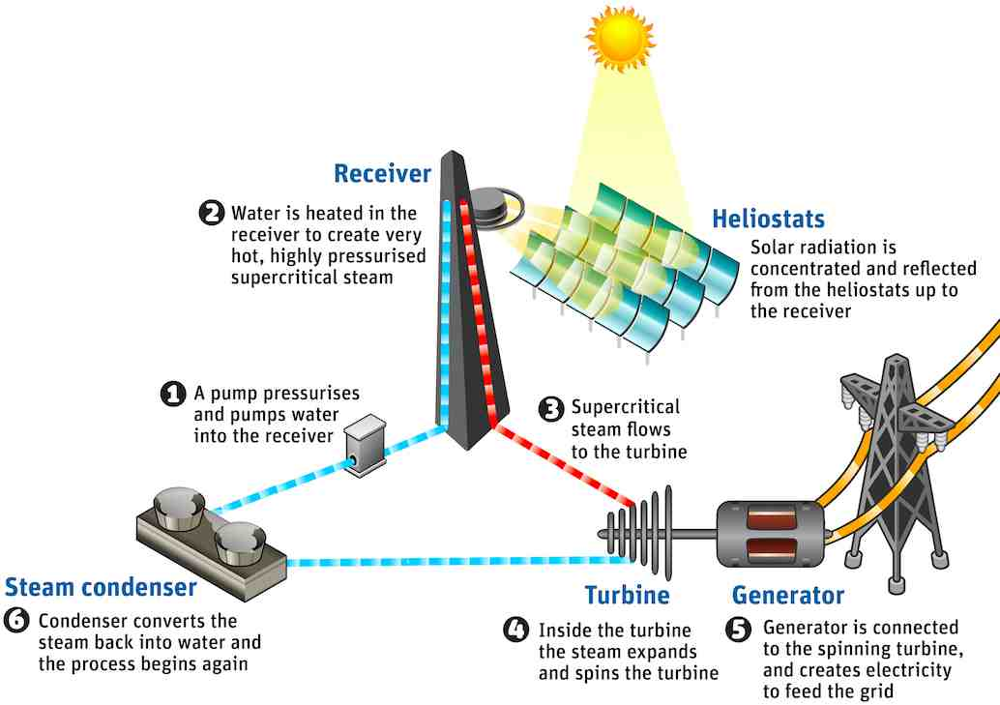

Solar Power
|  |
Basics of Solar PowerSolar power is energy converted from the sun into electrical current, and it can be gathered in a few different ways. The most well known method is probably direct conversion using photovoltaics. Photovoltaics is typically accomplished using a solar panel. Such a panel captures sunlight, which excites electrons in the silicon that makes up the panel. These electrons move through the panel and into an electrode to induce an electric current. For commercial applications, photovoltaics is employed in a "solar farm", wherein numerous solar panels are arranged across flat, unshaded land and allowed to track the sun throughout the day. While photovoltaics is quite popular, it isn't as effective for the immense demands of modern society. Instead, concentration of solar energy to generate heat is a popular, and efficient, method for large-scale power production. Solar concentration, as depicted above, uses large mirrors (called heliostats) to focus sunlight onto the top of a large tower that is laced with water-carrying pipes. This water becomes steam as the sunlight heats it, and the steam is used to drive turbines and produce electricity. Once the steam is run through the turbine, it's condensed back into its liquid form and recirculated to become steam again. This kind of solar power facility is called a "heliostatic power plant" and is quickly growing in popularity, since it takes up less land space than a typical solar farm. |
|||||||||||||||||||||||||||||||||||||||||||||||||||||||||||||||||||||||||||||||||||||||||||||||||||||||||||||||||||||||||||||||||||||||||||||||||||||||||||||||||||||||||||||||||||||||||||||||||||||||||||||||||||||||||||||||||||||||||||||||||||||||||||||||||||||||||||||||||||||||||||||||||||||||||||||||||||||||||||||||||||||||||||||||||||||||||||||||||||||||||||||||||||||||||||||||||||||||||||||||||||||||||||||||||||||||||||||||||||||||||||||||||||||||||||||||||||||||||||||||||||||||||||||||||||||||||||||||||||||||||||||||||||||||||||||||||||||||||||||||||||||||||||||||||||||||||||||||||||||||||||||||||||||||||||||||||||||||||||||||||||||||||
SafetySolar power is very safe for humans. Solar panels produce no fumes or emissions and require no fuel or power source. Solar concentrators are likewise safe for human populations and also produce no emissions, other than an occasional steam leak. Solar panels require little in the way of maintenance and can be installed on consumer structures like homes and businesses. |
||||||||||||||||||||||||||||||||||||||||||||||||||||||||||||||||||||||||||||||||||||||||||||||||||||||||||||||||||||||||||||||||||||||||||||||||||||||||||||||||||||||||||||||||||||||||||||||||||||||||||||||||||||||||||||||||||||||||||||||||||||||||||||||||||||||||||||||||||||||||||||||||||||||||||||||||||||||||||||||||||||||||||||||||||||||||||||||||||||||||||||||||||||||||||||||||||||||||||||||||||||||||||||||||||||||||||||||||||||||||||||||||||||||||||||||||||||||||||||||||||||||||||||||||||||||||||||||||||||||||||||||||||||||||||||||||||||||||||||||||||||||||||||||||||||||||||||||||||||||||||||||||||||||||||||||||||||||||||||||||||||||||||
Environmental ImpactDespite the lack of danger to humans, concerns have been raised about the environmental impacts of solar concentrators. Temperatures at the focal point of such installations can reach approximately 550 °C; more than sufficient to instantly incinerate birds that fly too close to the tower. There is a solution to this problem though: modify the focusing of heliostats to focus few of them on the same point when the plant is not in use for power generation. While solar panels themselves are environmentally sound, their production does generate greenhouse emissions and their precursor components aren't sustainable. Additionally, there is no system or process for handling photovoltaic waste. Photovoltaic systems typically have an associated EPBT to quantify their overall impact on energy production/consumption. |
||||||||||||||||||||||||||||||||||||||||||||||||||||||||||||||||||||||||||||||||||||||||||||||||||||||||||||||||||||||||||||||||||||||||||||||||||||||||||||||||||||||||||||||||||||||||||||||||||||||||||||||||||||||||||||||||||||||||||||||||||||||||||||||||||||||||||||||||||||||||||||||||||||||||||||||||||||||||||||||||||||||||||||||||||||||||||||||||||||||||||||||||||||||||||||||||||||||||||||||||||||||||||||||||||||||||||||||||||||||||||||||||||||||||||||||||||||||||||||||||||||||||||||||||||||||||||||||||||||||||||||||||||||||||||||||||||||||||||||||||||||||||||||||||||||||||||||||||||||||||||||||||||||||||||||||||||||||||||||||||||||||||||